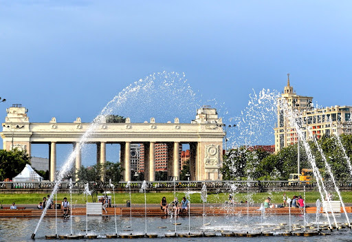

Информация о парке
Центральный парк культуры и отдыха имени Максима Горького — московский парк культуры и отдыха, столичная рекреационная зона, одна из самых больших и популярных в городе. Партерная часть парка появилась в 1923 году после организации на этой территории Всероссийской сельскохозяйственной выставки (ВСХВ), планировку которой от входа до Нескучного сада выполнил архитектор-авангардист Константин Мельников. Парк был открыт 12 августа 1928 года, в 1932-м парку присвоили имя писателя Максима Горького. В разное время проектировкой парка занимались Эль Лисицкий и Александр Власов. Арка главного входа возведена в 1955 году по проекту архитектора Георгия Щуко. В 2011 году началась комплексная реставрация общественного пространства, продолжающаяся до сих пор. В его состав входят Нескучный сад, Воробьёвы горы и Музеон. Общая площадь территории парка составляет 219,7 га.
Разное:
Вид на парк с центрального входа
Вид на парк сверху
Аттракцион в парке Горького